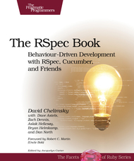

Behavioral driven development and the future
The evolution of Automated Testing
Created by Todd Wolfson / @twolfsn / github/twolfson
Live coding
BDD Example
Why are tests important?
Why do cars have brakes?
Why are tests important?
Why do cars have brakes?
So you can drive faster.
Absolving confusion
Time to unlearn misconceptions
TDD/BDD
- Methodologies for automated verification of expected functionality.
- Manual testing is not automated and therefore cannot be considered TDD/BDD.
- Differences are in the format (e.g. JSON, YAML, XML).
Test-first vs test-later approach
It's all about the situation
- Neither TDD nor BDD state that tests must be written first.
-
In some situations, test-first is appropriate.
- e.g. You have solidified the API
-
In other situations, test-later is appropriate.
- e.g. You have the idea but not the specifics
100% code coverage is not required
Scenario strikes again
- Code coverage has very little to do with TDD/BDD.
-
In some situations, 100% code coverage is appropriate.
- e.g. You have very little fat
- OR guaranteed specification will never change.
-
In other situations, lower coverage is appropriate.
- e.g. You are in the early stages of development
- OR creating experimental features.
Implementation vs Methodology
- Once again, TDD/BDD are about a format of tests and using them to move faster.
- PhantomJS is a testing harness for manipulating a browser.
- CasperJS is a combination of testing framework (TDD) and harness.
- Selenium is a combination of testing framework (TDD), runner, and harness.
</rant>
Before automation
Manual testing

- Manually cross-check results
- Have people poke at program until it breaks
Birth of TDD
SUnit (1994)
- Kent Beck working mainly in Smalltalk.
- Tried out a few experiments and not quite settled.
- On a consulting gig, converted latest “workspace” concept into classical concept.
SUnit (1994)
Class: SetTestCase
superclass: TestCase
instance variables: empty full
SetTestCase>>setUp
empty := Set new.
full := Set
with: #abc
with: 5
SetTestCase>>testAdd
empty add: 5.
self should: [empty includes: 5]
SetTestCase>>testRemove
full remove: 5.
self should: [full includes: #abc].
self shouldnt: [full includes: 5]
| suite |
suite := TestSuite named: 'Set Tests'.
suite addTestCase: (SetTestCase selector: #testAdd).
suite addTestCase: (SetTestCase selector: #testRemove).
^suite
JUnit (1995 - 2000)
- In 1995, Kent Beck and Erich Gamma invent JUnit on plane ride to OopsLa.
- In 2000, junit.org is registered and published to Sourceforge.
JUnit (1995 - 2000)
public class MoneyTest extends TestCase {
private Money f12CHF;
private Money f14CHF;
private Money f28USD;
protected void setUp() {
f12CHF= new Money(12, "CHF");
f14CHF= new Money(14, "CHF");
f28USD= new Money(28, "USD");
}
}
public void testSimpleAdd() {
Money m12CHF= new Money(12, "CHF");
Money m14CHF= new Money(14, "CHF");
Money expected= new Money(26, "CHF");
Money result= m12CHF.add(m14CHF);
assert(expected.equals(result));
}
TestSuite suite= new TestSuite();
suite.addTest(new MoneyTest("testSimpleAdd"));
TestResult result= suite.run();
Modern JUnit (circa 2012)
public class MyClassTest {
@BeforeClass
public static void testSetup() {
}
@AfterClass
public static void testCleanup() {
// Teardown for data used by the unit tests
}
@Test(expected = IllegalArgumentException.class)
public void testExceptionIsThrown() {
MyClass tester = new MyClass();
tester.multiply(1000, 5);
}
@Test
public void testMultiply() {
MyClass tester = new MyClass();
assertEquals("10 x 5 must be 50", 50, tester.multiply(10, 5));
}
}
Evolution into BDD
Dan North (2006)
Wants to convert agile story template into scenarios
As a [X]
I want [Y]
so that [Z]
Given some initial context,
When an event occurs,
then ensure some outcomes.
Dan North (2006)
Inside of blog posts, already outlining features and benefits. Even has the name BDD already.
Given the account is in credit
And the card is valid
And the dispenser contains cash
When the customer requests cash
Then ensure the account is debited
And ensure cash is dispensed
And ensure the card is returned
Dan North (2006)
Converted story template looks like
public class AccountIsInCredit implements Given {
public void setup(World world) {
...
}
}
public class CardIsValid implements Given {
public void setup(World world) {
...
}
}
public class CustomerRequestsCash implements Event {
public void occurIn(World world) {
...
}
}
jBehave (2006)

- Published by Dan North and Chris Matts
jBehave (2006)
public class TraderSteps {
private Stock stock;
@Given("a stock of symbol $symbol and a threshold of $threshold")
public void aStock(String symbol, double threshold) {
stock = new Stock(symbol, threshold);
}
@When("the stock is traded at $price")
public void theStockIsTradedAt(double price) {
stock.tradeAt(price);
}
@Then("the alert status should be $status")
public void theAlertStatusShouldBe(String status) {
ensureThat(stock.getStatus().name(), equalTo(status));
}
}
RSpec (2006)

- Published by Steven Baker
RSpec (2006)
Very indicative of current mocha implementation
describe Hash do
before(:each) do
@hash = Hash.new(:hello => 'world')
end
it "should return a blank instance" do
Hash.new.should eql({})
end
it "should hash the correct information in a key" do
@hash[:hello].should eql('world')
end
end
Vertical Slides
Slides can be nested inside of other slides, try pressing down.
Basement Level 1
Press down or up to navigate.
Basement Level 2
Cornify
Basement Level 3
That's it, time to go back up.
Point of View
Press ESC to enter the slide overview. Hold down alt and click on any element to zoom in on it using zoom.js. Alt + click anywhere to zoom back out.
rvl.io
If you don't like writing slides in HTML you can use the online editor rvl.io.
Works in Mobile Safari
Try it out! You can swipe through the slides and pinch your way to the overview.
Marvelous Unordered List
- No order here
- Or here
- Or here
- Or here
Fantastic Ordered List
- One is smaller than...
- Two is smaller than...
- Three!
Transition Styles
You can select from different transitions, like:
Cube -
Page -
Concave -
Zoom -
Linear -
Fade -
None -
Default
Themes
Reveal.js comes with a few themes built in:
Sky -
Beige -
Simple -
Serif -
Night -
Default
* Theme demos are loaded after the presentation which leads to flicker. In production you should load your theme in the <head> using a <link>.
Global State
Set data-state="something" on a slide and "something"
will be added as a class to the document element when the slide is open. This lets you
apply broader style changes, like switching the background.
"blackout"
"soothe"
Custom Events
Additionally custom events can be triggered on a per slide basis by binding to the data-state name.
Reveal.addEventListener( 'customevent', function() {
console.log( '"customevent" has fired' );
} );
Clever Quotes
These guys come in two forms, inline:
The nice thing about standards is that there are so many to choose from
and block:
For years there has been a theory that millions of monkeys typing at random on millions of typewriters would reproduce the entire works of Shakespeare. The Internet has proven this theory to be untrue.
Pretty Code
function linkify( selector ) {
if( supports3DTransforms ) {
var nodes = document.querySelectorAll( selector );
for( var i = 0, len = nodes.length; i < len; i++ ) {
var node = nodes[i];
if( !node.className ) ) {
node.className += ' roll';
}
};
}
}
Courtesy of highlight.js.
Intergalactic Interconnections
You can link between slides internally, like this.
Fragmented Views
Hit the next arrow...
... to step through ...
any type- of view
- fragments
Fragment Styles
There's a few styles of fragments, like:
grow
shrink
roll-in
fade-out
highlight-red
highlight-green
highlight-blue
Spectacular image!
Take a Moment
Press b or period on your keyboard to enter the 'paused' mode. This mode is helpful when you want to take distracting slides off the screen during a presentation.
Stellar Links
It's free
reveal.js and rvl.io are entirely free but if you'd like to support the projects you can donate below. Donations will go towards hosting and domain costs.